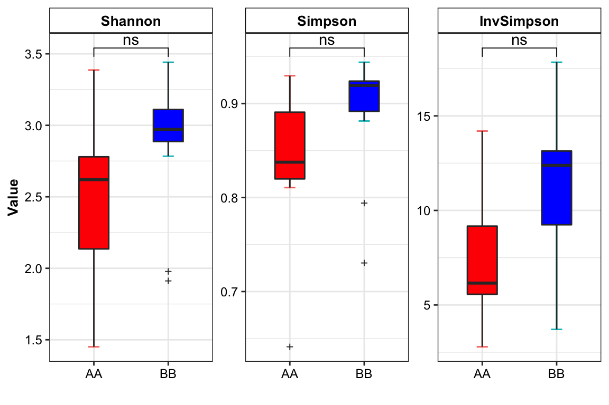
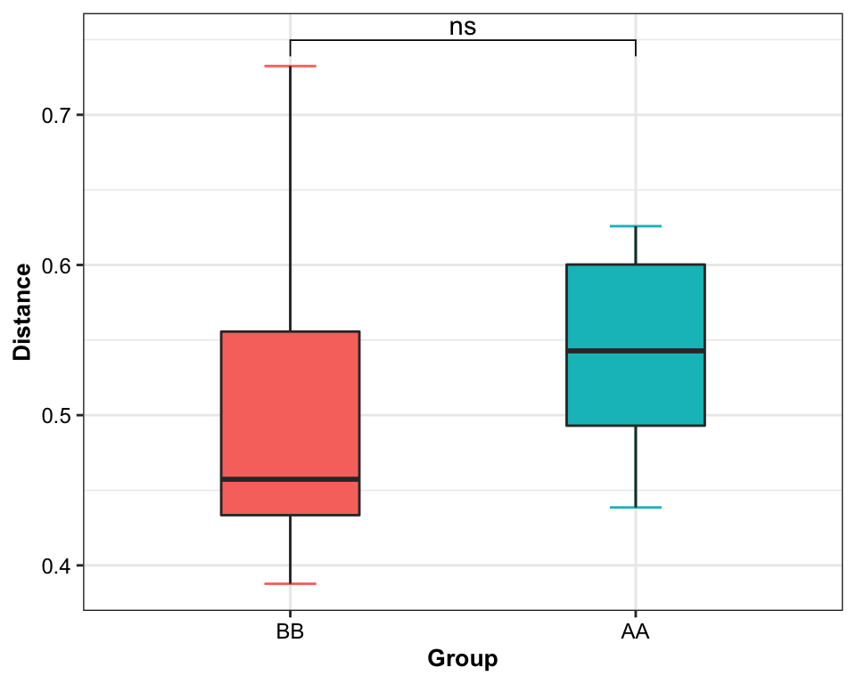

Chapter 5 Diversity analysis
Loading packages
library(XMAS)
library(dplyr)
library(tibble)
library(phyloseq)
library(ggplot2)
library(ggpubr)5.1 Alpha diveristy
- Calculate the alpha diversity
Notes: choosing the measures (Shannon, Simpson and InvSimpson) only for relative abundance.
metaphlan2_ps_genus_alpha <- run_alpha_diversity(ps=metaphlan2_ps_remove_BRS, measures = c("Shannon", "Simpson", "InvSimpson"))
DT::datatable(metaphlan2_ps_genus_alpha)- visualization
plot_boxplot(data=metaphlan2_ps_genus_alpha,
y_index = c("Shannon", "Simpson", "InvSimpson"),
group = "Group",
group_names = c("AA", "BB"),
group_color = c("red", "blue"),
do_test = TRUE,
method = "wilcox.test")

Figure 5.1: Alpha diversity
5.2 Beta diversity
- beta dipersion
metaphlan2_ps_beta <- run_beta_diversity(ps=metaphlan2_ps_species_filter_trim, method = "bray", group = "Group")##
## Permutation test for homogeneity of multivariate dispersions
## Permutation: free
## Number of permutations: 999
##
## Response: Distances
## Df Sum Sq Mean Sq F N.Perm Pr(>F)
## Groups 1 0.00725 0.0072500 0.8423 999 0.362
## Residuals 20 0.17215 0.0086076
##
## Pairwise comparisons:
## (Observed p-value below diagonal, permuted p-value above diagonal)
## AA BB
## AA 0.37
## BB 0.36968metaphlan2_ps_beta$BetaDispersion

Figure 5.2: Beta diversity
5.3 Systematic Information
sessionInfo()## R version 4.1.2 (2021-11-01)
## Platform: x86_64-apple-darwin17.0 (64-bit)
## Running under: macOS Monterey 12.2.1
##
## Matrix products: default
## LAPACK: /Library/Frameworks/R.framework/Versions/4.1/Resources/lib/libRlapack.dylib
##
## locale:
## [1] en_US.UTF-8/en_US.UTF-8/en_US.UTF-8/C/en_US.UTF-8/en_US.UTF-8
##
## attached base packages:
## [1] stats graphics grDevices utils datasets methods base
##
## other attached packages:
## [1] RColorBrewer_1.1-2 viridis_0.6.2 viridisLite_0.4.0 ggpubr_0.4.0 ggplot2_3.3.5 phyloseq_1.38.0 tibble_3.1.6
## [8] dplyr_1.0.8 XMAS_2.1.1
##
## loaded via a namespace (and not attached):
## [1] utf8_1.2.2 reticulate_1.24 tidyselect_1.1.2 RSQLite_2.2.10
## [5] AnnotationDbi_1.56.2 htmlwidgets_1.5.4 grid_4.1.2 BiocParallel_1.28.3
## [9] Rtsne_0.15 munsell_0.5.0 units_0.8-0 codetools_0.2-18
## [13] DT_0.21 umap_0.2.8.0 withr_2.5.0 colorspace_2.0-3
## [17] Biobase_2.54.0 highr_0.9 knitr_1.37 rstudioapi_0.13
## [21] pscl_1.5.5 stats4_4.1.2 bayesm_3.1-4 robustbase_0.93-9
## [25] ggsignif_0.6.3 MatrixGenerics_1.6.0 labeling_0.4.2 optparse_1.7.1
## [29] mbzinb_0.2 GenomeInfoDbData_1.2.7 lpsymphony_1.22.0 pheatmap_1.0.12
## [33] bit64_4.0.5 farver_2.1.0 rhdf5_2.38.1 vctrs_0.3.8
## [37] generics_0.1.2 TH.data_1.1-0 xfun_0.30 Maaslin2_1.8.0
## [41] R6_2.5.1 GenomeInfoDb_1.30.1 RVenn_1.1.0 locfit_1.5-9.5
## [45] RcppZiggurat_0.1.6 bitops_1.0-7 rhdf5filters_1.6.0 cachem_1.0.6
## [49] DelayedArray_0.20.0 assertthat_0.2.1 scales_1.1.1 multcomp_1.4-18
## [53] nnet_7.3-17 gtable_0.3.0 sandwich_3.0-1 rlang_1.0.2
## [57] genefilter_1.76.0 splines_4.1.2 protoclust_1.6.3 rstatix_0.7.0
## [61] broom_0.7.12 checkmate_2.0.0 yaml_2.3.5 reshape2_1.4.4
## [65] abind_1.4-5 crosstalk_1.2.0 backports_1.4.1 Rfast_2.0.6
## [69] qvalue_2.26.0 Hmisc_4.6-0 DiagrammeR_1.0.9 tensorA_0.36.2
## [73] tools_4.1.2 bookdown_0.24 zCompositions_1.4.0 ellipsis_0.3.2
## [77] gplots_3.1.1 jquerylib_0.1.4 biomformat_1.22.0 proxy_0.4-26
## [81] BiocGenerics_0.40.0 Rcpp_1.0.8.2 plyr_1.8.6 visNetwork_2.1.0
## [85] base64enc_0.1-3 zlibbioc_1.40.0 classInt_0.4-3 purrr_0.3.4
## [89] RCurl_1.98-1.6 rpart_4.1.16 openssl_2.0.0 Wrench_1.12.0
## [93] cowplot_1.1.1 S4Vectors_0.32.3 zoo_1.8-9 SummarizedExperiment_1.24.0
## [97] ggrepel_0.9.1 cluster_2.1.2 magrittr_2.0.2 data.table_1.14.2
## [101] RSpectra_0.16-0 truncnorm_1.0-8 mvtnorm_1.1-3 matrixStats_0.61.0
## [105] ALDEx2_1.26.0 corncob_0.2.0 RAIDA_1.0 evaluate_0.15
## [109] xtable_1.8-4 XML_3.99-0.9 jpeg_0.1-9 IRanges_2.28.0
## [113] gridExtra_2.3 shape_1.4.6 compiler_4.1.2 KernSmooth_2.23-20
## [117] crayon_1.5.0 htmltools_0.5.2 mgcv_1.8-39 pcaPP_1.9-74
## [121] ggVennDiagram_1.2.1 Formula_1.2-4 tidyr_1.2.0 geneplotter_1.72.0
## [125] libcoin_1.0-9 DBI_1.1.2 corrplot_0.92 biglm_0.9-2.1
## [129] MASS_7.3-55 sf_1.0-7 compositions_2.0-4 Matrix_1.4-0
## [133] ade4_1.7-18 getopt_1.20.3 car_3.0-12 permute_0.9-7
## [137] cli_3.2.0 parallel_4.1.2 igraph_1.2.11 GenomicRanges_1.46.1
## [141] pkgconfig_2.0.3 coin_1.4-2 foreign_0.8-82 foreach_1.5.2
## [145] annotate_1.72.0 bslib_0.3.1 multtest_2.50.0 XVector_0.34.0
## [149] NADA_1.6-1.1 stringr_1.4.0 digest_0.6.29 vegan_2.5-7
## [153] Biostrings_2.62.0 rmarkdown_2.13 htmlTable_2.4.0 edgeR_3.36.0
## [157] gtools_3.9.2 modeltools_0.2-23 lifecycle_1.0.1 nlme_3.1-155
## [161] jsonlite_1.8.0 Rhdf5lib_1.16.0 carData_3.0-5 askpass_1.1
## [165] limma_3.50.1 fansi_1.0.2 pillar_1.7.0 lattice_0.20-45
## [169] KEGGREST_1.34.0 fastmap_1.1.0 httr_1.4.2 DEoptimR_1.0-10
## [173] survival_3.3-1 glue_1.6.2 png_0.1-7 iterators_1.0.14
## [177] glmnet_4.1-3 bit_4.0.4 class_7.3-20 stringi_1.7.6
## [181] sass_0.4.0 metagenomeSeq_1.36.0 blob_1.2.2 DESeq2_1.34.0
## [185] latticeExtra_0.6-29 caTools_1.18.2 memoise_2.0.1 e1071_1.7-9
## [189] ape_5.6-2